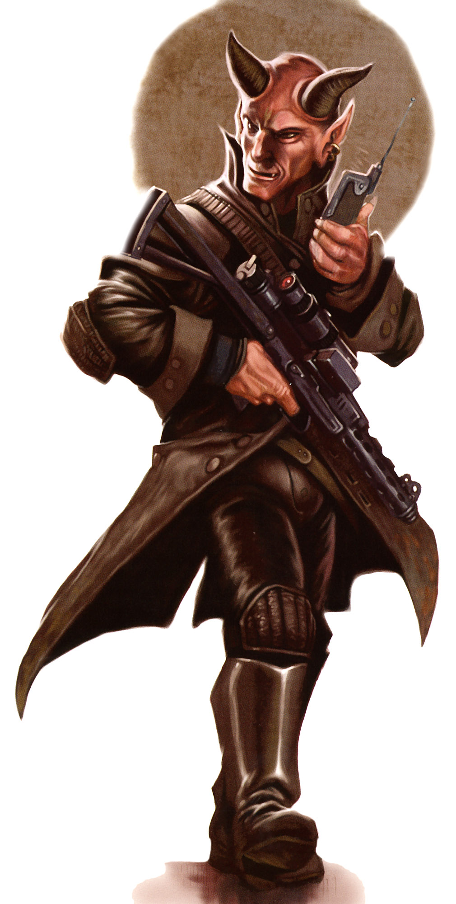

Devaronian
devaronian
Special Abilities: Devaronians begin the game with one rank in Survival or Deception. They still may not train Survival or Deception above rank 2 during character creation.
Resilient Metabolism: Devaronian physiology is naturally hardy and resistant to toxins. Members of the species add automatic [1 Success] to all Resilience checks they make.
Known for their history as explorers and their striking (and often intimidating) looks, Devaronians are a species familiar to many galactic travelers. Unlike most other species, Devaronian explorers actually made contact with the greater galaxy long before the Republic officially discovered the other inhabited systems near Devaron. Members of this entrepreneurial species are a common sight in spaceports and other centers of trade, and they are found all across the Outer Rim.
Devaronians carry the odd burden of resembling the mythological demons of many galactic cultures. Because of this, they are one of the galaxy’s most distrusted species. This created numerous misunderstandings during the early days of their species’ expansion, especially as they encountered galactic denizens unaware of life beyond their own world. Though Devaronians are no more prone to diabolical bargains than any other prominent species, their reputation still suffers because of their looks. Anyone who has tread the galaxy extensively (or even visited a cosmopolitan watering hole or two in the Outer Rim) likely knows better than to judge a Devaronian by looks alone, but newcomers are shocked every day when they see a demon of myth ordering a drink in a bar.
Through their species’ collective space travel experience, Devaronian explorers played a role in mapping the galaxy. While some of this work was done under the authority of the Republic, independent explorers—often with strong economic motivations—discovered and classified many worlds. Some Devaronian organizations possess maps that are believed to be more detailed and complete than even those in the official records on Coruscant.
Devaronians are a bipedal mammalian species. Their skin color ranges from red to green, and a pair of pointed horns dominate the male Devaronian’s head; commonly, females have dark, vestigial spots in the same location as the male’s horns. Devaronians’ mouths are filled with sharp pointed teeth, particularly effective at rending the meat that dominates their diets. Besides these identifying characteristics, Devaronians have a great many physiological similarities to humans—though few observers would confuse the two species.
Devaronians have black, silver-based blood. This unusual trait is linked to their particularly thorough blood filtration and cleansing system. Members of the species possess two livers, which constantly cleanse the body of toxins and carcinogens. This grants them an exceptionally high resistance to poisons, also enabling them to consume foods that are toxic to other species.
Devaronian physiological quirks cause sulfur to be a particularly effective stimulant (unlike for most other oxygen-breathing species, who find sulfur extremely unpleasant when inhaled). When a Devaronian breaths in sulfur, the substance rapidly enters the bloodstream, granting the Devaronian a burst of prodigious strength and speed. However, sulfur is one element that their livers cannot cleanse as effectively over the long term. Extended exposure to sulfur can have serious medical consequences for a Devaronian.
Devaronian culture is primarily matriarchal, in no small part because Devaronian men tend not to stay in one place long enough to achieve leadership positions. Whether these tendencies are purely cultural or have a biological component remains a topic of dispute amongst both Devaronians and offworld academics. Devaronian women, by contrast, tend to value security and prosperity, and have traditionally been the architects of Devaronian society, building and maintaining its cultural institutions and physical structures alike. Thus, most Devaronians who become corporate and political leaders, enter law enforcement, or pursue other careers with strong long-term prospects are women.
Male Devaronians, for their part, are more likely to be risk-takers, driven by wanderlust and the thrill of new experiences. While not averse to creating lasting emotional bonds, most Devaronian men stay in a single place for only a few years before moving on, if they remain that long. Male Devaronians who start families often support them while working remotely, taking on positions where they can send their earnings home while still satisfying their desire to explore the galaxy—thus many become starship hands, traders, or even smugglers. Those who remain in one location to raise a family or maintain other relationships tend to change professions more often than female Devaronians, and develop a wider but less expert pool of knowledge and skills as a result.
Of course, many individuals and even some cultural groups on Devaron defy these gender stereotypes. No few Devaronian women are starfaring adventur ers, and Devaronian history contains many men who achieved prominence in a single institution or field. Still, some visitors to Devaron are initially surprised at the seemingly low number of male Devaronians in the upper echelons of society on Devaron, as compared to vastly the higher ratio overall among the species’ offworld population.
Devaron is a temperate world in the Colonies region. The planet includes dense jungles and cooler mountainous regions. The species has established prosperous cities in most regions of the planet, though the oldest and most populous are within the low mountains. Devaron’s jungles are home to a range of dangerous predators, which continue to thrive on the largely civilized world. Journeys to these wilds are dangerous for even accomplished explorers.
Despite Devaron’s long history, the jungles of the world remain untamed. However, while some species might see this as a strange choice for a species with the technology to clear the local flora, Devaronians believe that doing so would be shortsighted and foolish. The dominant form of plant life within Devaron’s jungles is a particularly hardy vine, which interconnects and grows to form massive tendrils tens of meters in diameter that run for many kilometers.
These tendrils often reach the uppermost levels of the jungle and even conceal the basic terrain far below. The natural passageways these create make travel through the jungle far easier than it is on worlds with similarly lush biospheres, and while predators are a threat to travelers far from a city or town, there are few creatures on Devaron that cannot be dispatched with a well-placed blaster shot. Further, the biodiversity of the jungles offers Devaronians numerous advantages, economic and otherwise, especially in a galaxy where many worlds have been reshaped into vast, planetspanning cities. Devaron has a few industrial centers and some large cities, but many Devaronians live in small, tight-knit villages and survive by hunting and cultivating crops in the jungle. Thanks to Devaron’s long and ongoing involvement in galactic exploration and trade, however, certain technologies are widespread, making survival in the jungle far easier for the current generation than it was for their ancient ancestors, who lacked such equipment.
Nearly all Devaronians are fluent in Basic, though some speak localized dialects specific to their culture on Devaron. Relatively few study the ancestral language of Devaronese.
Devaronians have become increasingly prominent in the less civilized portions of the Outer Rim over the last few decades, in part because of the Empire’s distrust of aliens of all sorts. The legends associated with their appearance—as well as their natural durability—make them desirable as Hired Guns, particularly among the less savory elements of society. Devaronian resourcefulness also suits as the lifestyles of Explorers, Colonists, and Bounty Hunters.
Devaron’s jungles are expansive and largely untamed. Few Devaronians ever travel to the darkest and deepest portions. Since the advent of space travel, male Devaronians frequently ventured offworld to slake their wanderlust, ignoring the far closer wild and unexplored jungles. In spite of this, Devaronian empires have risen and fallen within the jungles for tens of thousands of years, and remnants of these societies can still be found by intrepid explorers. Over the millennia, countless enclaves were built far from the sites of modern-day cities—including a Jedi Temple that remained active during the Clone Wars.
Many of these facilities continue to harbor valuable goods even millennia after sentients last used them. However, the predators and other dangers that led to their abandonment may still remain active. Finding and salvaging the remaining goods in these sites is an extremely profit able opportunity, but any venture into the jungle means facing lost and forgotten dangers as well.
Player Characters might uncover maps or journals that identify facilities concealed by Devaron’s jungles. A mine might still have a vein of ore, which could be better obtained with newer technology. A pirate’s base of operations might have treasures that were carefully guarded by droids that remain active centuries later. A lost city could still hold the treasures of those who dwelt there, but the plague that killed its inhabit ants might yet linger in local wildlife that carries it without displaying the symptoms.